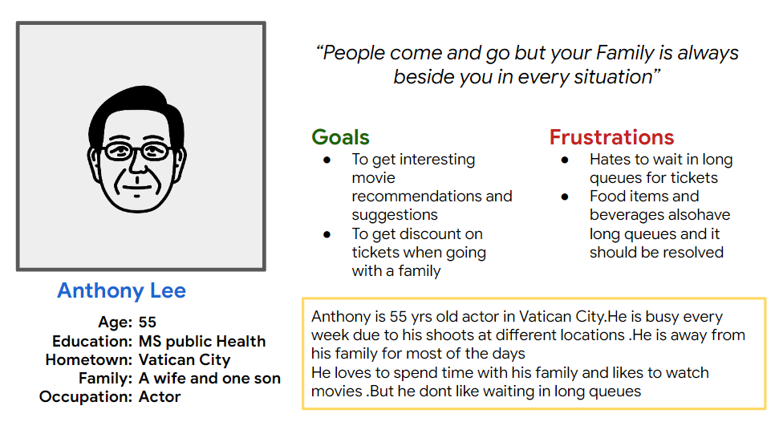
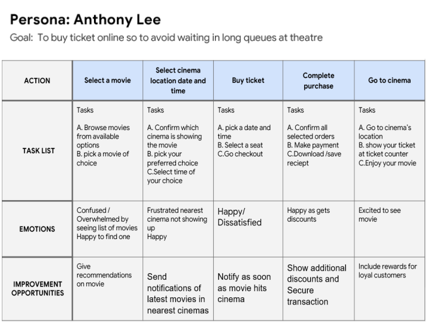
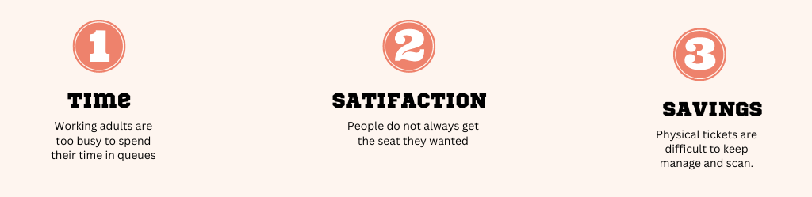
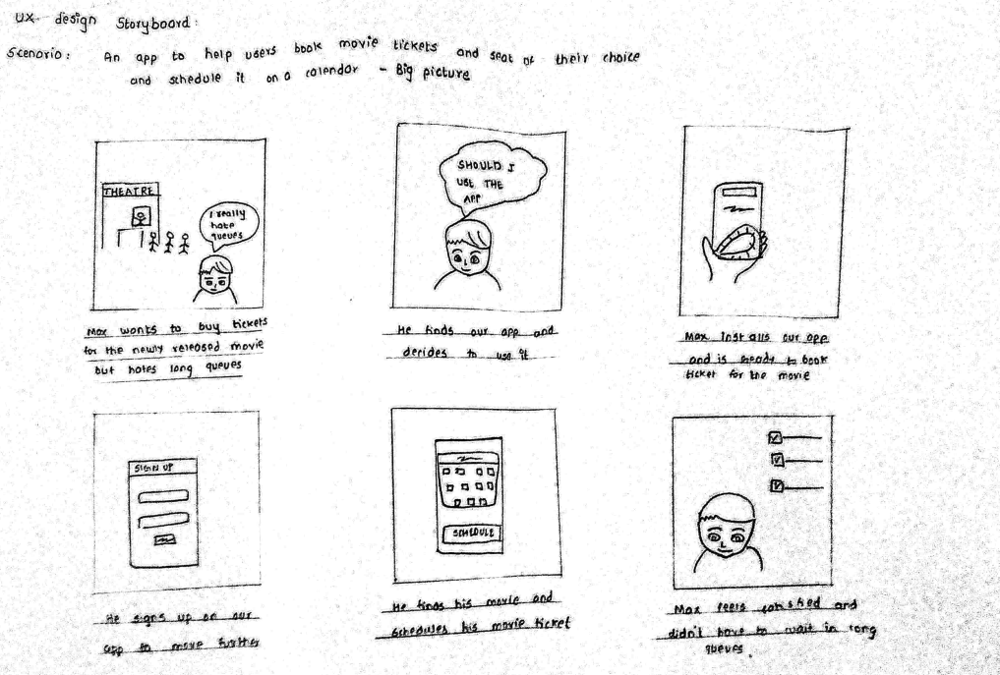

Project Overview
Screenz is an realtime movie seat booking app. It is design to keep user comfort in mind.To save users time standing in long queues and to book seats according to their choice. Discounts are great too.
My role and responsibilities:
I was responsible for designing Screenz app from conception to delivery with the tasks like Ux research, Empathize, Ideation, Usability studies, Wireframing, design of high fidelity, Prototyping, and accountability for accessibility
The Problem
Users are struggling with the long time-consuming process of physical ticket bookings and keep them safe till the time. Those who are friendly with technology and having busy schedules wants to book seat of their choice.
The Process:

Design Thinking Framework
During the project, I had followed the design thinking framework. It is a way to create a user-centered approach to problem-solving. It helps to address a real user problem, which is functional and affordable. There are five phases in the process.
1.Empathize
2.Define
3.Ideate
4.Prototype
5.Test
Each phase of the framework answers a specific question. The framework continues after initial Low fidelity designs for further iterations and high fidelity design to make them more user-centered.
Emphatize and Define
 Problem Statement:
Anthony Lee is a working person who needs to buy movie tickets online because he doen't have time to stand in long queues on weekends
Hypothesis statement:
If he books movie tickets by an app and schedules it directly in his planner, then he can plan his day effectively in advance.
User Story:
As a working person I have my weekends off so it would be great if i can book my tickets easily online rather than physically buying tickets so my time would be saved and I could rest
Pain Points:
Ideation
The ideation process is a journey towards the brainstorming of possible solutions. It consists of competitive analysis, competitive reports, Crazy 8 exercise, storyboarding, user flow, and Information Architecture of an app.
Competitive Analysis
The goal of the analysis was to compare user experience and features of competitor’s websites. Four competitors have been analyzing, as a part of the competitive analysis. Among them, 3 were direct competitors (INOX, PVR, Bookmyshow) and were indirect competitors(Paytminsider, Bookmyshow).The complete competitive analysis can be view here.

Ideation Exercises on Paper
Wireframe Ideation

I had ideated some designs for the home screen on paper. From them, I had chosen the best-suited sections and finalized sections for the home screen. It is fun when your mind is flourishing with ideas, and you crave to explore them more
Usability Study
An initial wireframe is tested with potential users by a usability study. It was conducted remotely in India. The usability study revealed some valuable insights, and it made me understand how minute details can change the user’s perspective! The process and details related to the usability study are present below.
Derivatives from Usability Study

Insights